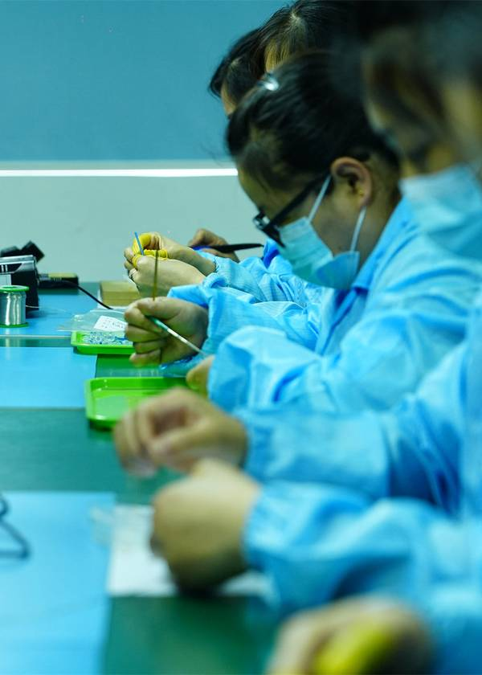
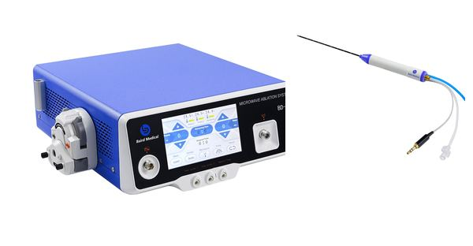
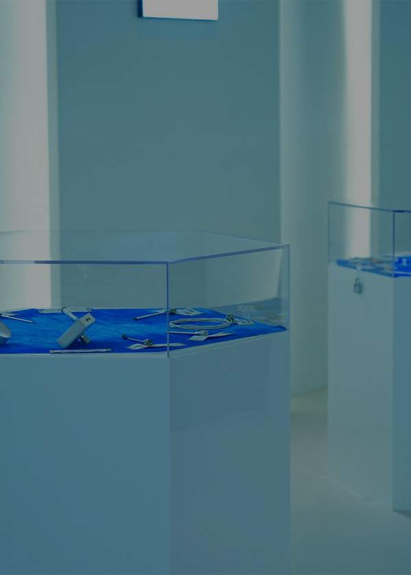

Single-use needles and apparatus
~614
Hospitals in China bought Baird products in 2025 (20-F)
Registered in China as higher-risk (Class III) devices for thyroid nodules and liver cancer.
H1 2026 against H1 2025, unaudited. Full-year 2025 revenue fell 39.2%.
$9.9M
H1 2026 revenue, from $8.0M
$4.8M
Technology licensing, new in 2026: 48% of H1 revenue
−38%
Revenue from needles and apparatus: $4.95M, from $7.96M

At Jun 30, 2026 · unaudited

By customer location, H1 2026 against H1 2025: the U.S. was 27% of H1 2026 revenue, mainland China 33%, down from 84%.
$2.67M
U.S.
from $0.12M
$3.26M
Mainland China
from $6.66M
$3.96M
Hong Kong
from $1.18M
All of 2025: mainland China $13.50M, Hong Kong $7.99M, U.S. $0.94M. The $9.9M total includes $4.8M of licensing, not split by location.
Forward-looking statements; not an offer or advice. H1 2026 unaudited. Risks: going-concern conclusion relies partly on CEO/related-party support; receivables over a year past original terms; two customers were 54% of H1 revenue; CEO beneficially held 43.1% (20-F, Apr 2026); Sep 2026 $4.3M secured convertible note could add up to 27.5M shares at its floor price (32.0M outstanding before); material weaknesses in reporting controls; Nasdaq delisting; PRC regulation. See SEC filings.